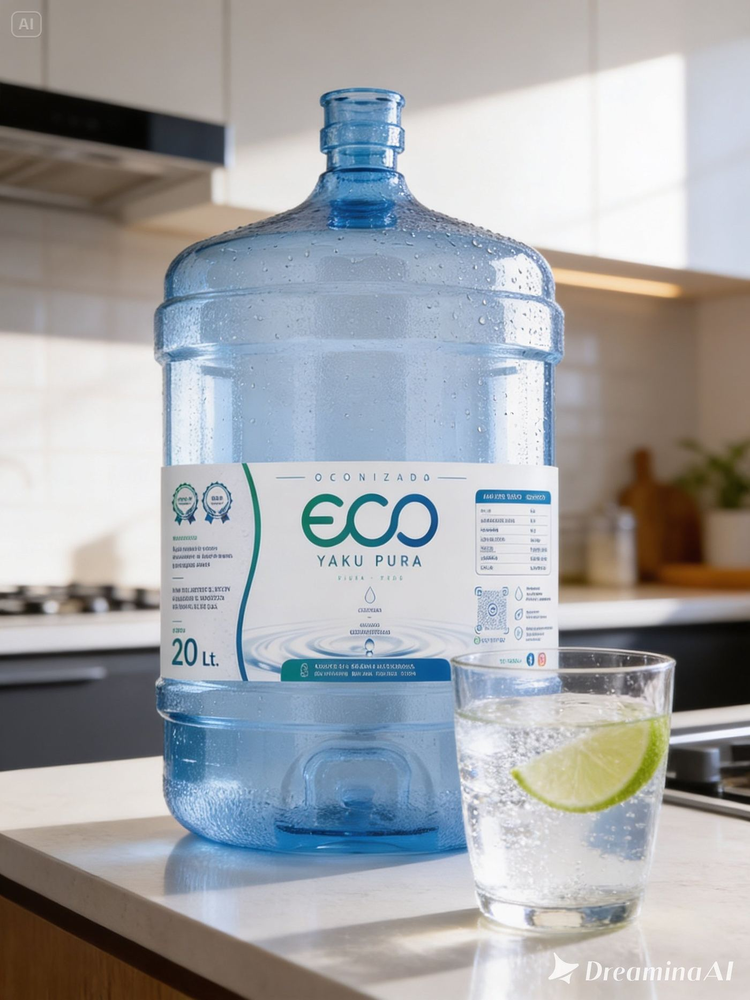
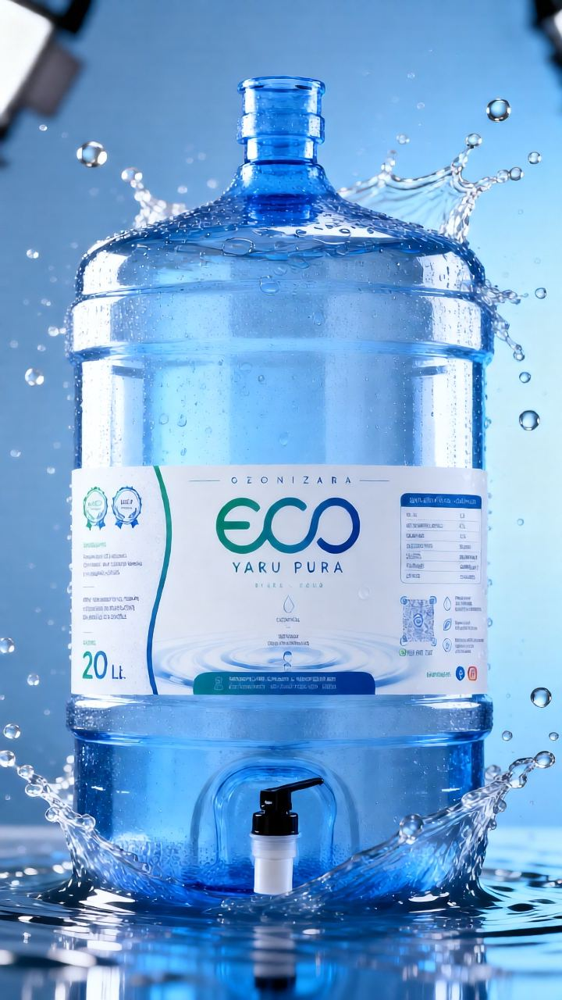

⭐⭐⭐⭐⭐ +500 clientes en Piura
Hogares · Hoteles · Colegios · Clínicas · Restaurantes Piura Centro · Castilla · Sullana · El Chipe · Veintiséis de Octubre · Los Ejidos · Miraflores

💧
100% OzonizadaMáxima pureza natural
🛡️
Sin SodioLigera y saludable
✅
Libre de ImpurezasCalidad garantizada
🚚
Entrega en 24hEn toda Piura
♻️
Envase ReciclableComprometidos con el planeta
500+
Clientes activos
25+ años
De experiencia
24h
Entrega rápida
0Na
Sin sodio
100%
Ozonizada
Nuestro Producto
Bidón de Agua Pura 20 Litros en Piura
Agua ozonizada, sin sodio y libre de impurezas en bidones de 20 litros. Para tu hogar, tu oficina o tu negocio en Piura. Entrega en menos de 24 horas.

20 Litros⭐ Más Pedido
Bidón 20 Litros
Agua Pura a Domicilio — Piura
El bidón de agua más pedido en Piura. Agua ozonizada al 100%, sin sodio y libre de impurezas. Compatible con todos los dispensadores estándar. Ideal para hogares, oficinas y negocios. Entrega en menos de 24 horas en toda Piura.
Más de 500 hogares y empresas ya eligieron el agua más pura de Piura. Esto es lo que nos dicen.
"Excelente calidad de agua. La entrega es puntual y el servicio muy profesional. Ya no compramos agua en otra parte."
M
María L.
Hogar · Piura Centro
"Llevamos más de un año con ECO YAKU en nuestra empresa. El agua es de primera calidad y siempre llega a tiempo. Muy recomendado para negocios en Piura."
C
Carlos M.
Empresa · Castilla
"El agua tiene un sabor muy limpio, sin ningún olor. Los bidones llegan en perfecto estado. El mejor servicio de agua en Piura."
R
Rosa T.
Hogar · Veintiséis de Octubre
"Pedimos para toda la oficina. Son muy puntuales y el agua es de excelente calidad. El asesor siempre está disponible para coordinar las entregas."
A
Ana P.
Empresa · Urb. Santa Isabel
"Increíble servicio. Desde que empecé a tomar agua ECO YAKU se nota la diferencia. Sin gusto raro, completamente pura. ¡100% recomendado!"
Hogares, empresas y distribuidores de Piura ya confían en ECO YAKU. Elige el plan que mejor se adapta a ti.
🏡 Hogares
Para familias piuranas que eligen lo mejor
Pedido rápido por WhatsApp en minutos
Entrega a domicilio en Piura en 24h
Suscripción mensual sin complicaciones
Bidones 20L para toda la familia
Pago: efectivo o transferencia
🏢 Empresas y Negocios
Para negocios en Piura que no comprometen calidad
Bidones 20L con entrega programada
Dispensadores de agua en comodato
Comprobantes de pago para tu contabilidad
Precios especiales por volumen en Piura
Asesor de cuenta dedicado
🏨 Hoteles & Colegios
Agua certificada para instituciones de Piura
Precios especiales según volumen mensual
Entrega programada sin interrupciones
Certificados DIGESA · HACCP · BPM
Factura electrónica para tu contabilidad
Asesor de cuenta exclusivo en Piura
Preguntas frecuentes
Lo que la gente pregunta sobre agua pura en Piura
Resolvemos tus dudas sobre nuestro servicio de agua ozonizada y entrega a domicilio en Piura.
ECO YAKU ofrece bidones de agua pura de 20 litros con entrega a domicilio en toda la ciudad de Piura. Puedes hacer tu pedido por WhatsApp al +51 969 177 217 o a través de nuestras redes sociales (@eco.agua.piura).
ECO YAKU entrega tu pedido en menos de 24 horas en toda la ciudad de Piura. Haces tu pedido hoy por WhatsApp y mañana lo tienes en tu puerta, sin complicaciones.
La ozonización es un proceso natural que usa ozono (O₃) para eliminar el 99.9% de bacterias, virus y microorganismos del agua sin usar químicos ni alterar su sabor. Es el método de purificación más seguro y efectivo, y es exactamente lo que usamos en ECO YAKU.
No. El agua ECO YAKU es 100% libre de sodio (Na: 0). Esto la hace ideal para toda la familia, incluyendo personas con hipertensión, problemas renales o cualquier condición que requiera restricción de sodio. Ligera, pura y saludable.
Sí. Para clientes empresariales ofrecemos dispensadores de agua en comodato (préstamo gratuito) con contrato de servicio mensual. Contáctanos por WhatsApp para conocer las condiciones.
Entregamos en toda la ciudad de Piura: Piura Centro, Castilla, Veintiséis de Octubre, El Chipe, Los Ejidos, Miraflores, Sullana, y más. Si no estás seguro si cubrimos tu zona, escríbenos y te confirmamos al instante.
ECO YAKU ofrece bidones de agua pura de 20 litros, ozonizada, sin sodio y libre de impurezas. Perfectos para hogares, oficinas y negocios de Piura. Compatibles con todos los dispensadores estándar.
Nuestros precios son competitivos y accesibles para toda Piura. Para conocer el precio exacto según tu zona y la cantidad que necesitas, escríbenos por WhatsApp al +51 969 177 217 y te cotizamos de inmediato, sin compromiso.
Sí, el agua ozonizada es completamente segura para el consumo diario. La Organización Mundial de la Salud (OMS) reconoce la ozonización como uno de los métodos de purificación más seguros y eficaces. No deja residuos químicos y es apta para toda la familia, incluyendo niños, embarazadas y adultos mayores.
El agua de grifo en Piura puede contener cloro, sedimentos, metales pesados y microorganismos. El agua purificada ECO YAKU pasa por filtración avanzada y ozonización, eliminando el 99.9% de contaminantes sin alterar el sabor natural. Es sin sodio, libre de impurezas y certificada en laboratorio en cada lote.
Sí, ECO YAKU entrega bidones de agua pura de 20 litros en Castilla, Sullana, Veintiséis de Octubre, El Chipe, Los Ejidos y toda la provincia de Piura. Si tienes dudas sobre tu zona específica, escríbenos por WhatsApp al +51 969 177 217 y confirmamos cobertura de inmediato.
Sí, ofrecemos un servicio corporativo especial para empresas, oficinas, colegios, clínicas y negocios de Piura. Incluye entregas programadas, precios por volumen, dispensadores en comodato y factura electrónica. Contáctanos para recibir una cotización personalizada.
Gracias al proceso de ozonización, el agua ECO YAKU se conserva en perfectas condiciones hasta 30 días después de abierto el bidón, siempre que se mantenga tapado y alejado de la luz solar directa. Para una familia de 4 personas con consumo normal, un bidón de 20 litros dura aproximadamente 1 semana.
Síguenos y encuéntranos en redes
Encuentra nuestro contenido, promociones y novedades en nuestras redes sociales. Cuando busques agua pura en Piura, ¡ECO YAKU siempre aparece!
+500 familias y empresas de Piura confían en ECO YAKU para su hidratación diaria.
★★★★★
"Sabor suave, ligera y refrescante. La mejor agua que mi familia puede tomar. Desde que la probé no compro otra. ¡Gracias ECO YAKU Piura!"
MG
María G.Cliente hogar — Piura Centro
★★★★★
"En nuestra empresa pedimos bidones semanalmente. Siempre puntuales, el agua es de excelente calidad y el servicio es muy profesional."
RL
Roberto L.Gerente — Castilla, Piura
★★★★★
"Lo que más me convenció fue el ozonizado y sin sodio. Mis hijos la toman a diario y se nota la diferencia. ¡Recomendadísima en Piura!"
CP
Carmen P.Mamá de familia — El Chipe, Piura
ECO YAKU es el proveedor de agua ozonizada certificada para hoteles, hostales y alojamientos en Piura. Ofrecemos entrega programada, dispensadores en comodato y factura electrónica. Contáctanos al +51 969 177 217 para una cotización sin costo.
ECO YAKU provee agua ozonizada certificada a instituciones educativas en Piura, incluyendo colegios y universidades. Nuestro servicio incluye entrega programada, certificados DIGESA y HACCP, y factura electrónica para su contabilidad. Ya confían en nosotros: Colegio Vallesol, Colegio Turicara Filial Piura.
ECO YAKU es el proveedor de agua ozonizada para empresas más confiable de Piura. Con más de 25 años de experiencia, certificaciones DIGESA, HACCP y BPM, y clientes como Scotiabank, Saga Falabella, Grupo AUNA y Clínica Miraflores, ofrecemos la mayor garantía de calidad y servicio en la región.
Sí. ECO YAKU tiene cobertura de entrega en Piura Centro, Castilla, Veintiséis de Octubre, Sullana, El Chipe, Los Ejidos, Miraflores, Las Monteros, Country Club, San Ramón y otras urbanizaciones. Si tu zona no aparece, consúltanos — estamos expandiendo nuestra cobertura constantemente.
Pide tu agua ahora
Contacto y pedidos — Piura
Escríbenos y recibe tu agua ozonizada en menos de 24 horas en cualquier punto de Piura.
Contáctanos directamente
💬
WhatsApp (Pedidos)
+51 969 177 217 La forma más rápida de pedir tu agua en Piura